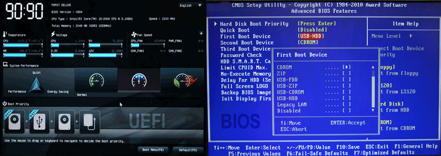

BIOS/UEFI
UEFI (Unified Extensible Firmware Interface)
- Function: Modern replacement for BIOS; manages startup and loads the operating system.
- Advantages:
- Faster boot times and better security against bootkits.
- Supports drives larger than 2.2TB and 64-bit firmware drivers.
- Compatible with both UEFI and BIOS hardware.
- Troubleshooting:
- Update (flash) UEFI firmware for new features and bug fixes.
BIOS (Basic Input/Output System)
- Function: Legacy firmware stored in ROM; initializes hardware and loads the OS.
- Key Facts:
- Controls startup and system settings.
- Can be updated (flashed) to support newer hardware.
- Troubleshooting:
- If BIOS fails, reset using manufacturer’s recovery process.
- Ensure updates match motherboard specifications to prevent failures.
EEPROM (Electrically Erasable Programmable Read-Only Memory)
- Function: Stores firmware (BIOS/UEFI); allows updates without hardware removal.
- Advantages:
- Non-volatile; retains data without power.
- Replaces older EPROM and CMOS storage.
- Troubleshooting:
- Corrupt firmware may require reflashing or motherboard replacement.
CMOS (Complementary Metal-Oxide Semiconductor)
- Function: Legacy term for system settings storage (now replaced by EEPROM).
- Key Facts:
- Stores boot device order, system time, and hardware settings.
- Powered by a small battery on the motherboard.
- Troubleshooting:
- If BIOS settings reset unexpectedly, replace the CMOS battery.
- To reset BIOS passwords, remove and replace the jumper on the motherboard.
Startup Process
- Power reaches the processor, which looks for BIOS/UEFI instructions.
- BIOS/UEFI runs the Power-On Self-Test (POST) to check hardware integrity.
- Identifies and configures system devices.
- Searches for a bootable drive (based on boot order).
- Loads the bootloader and transfers control to the operating system.
Updating BIOS/UEFI
- Flashing: Download manufacturer updates and use their utility to rewrite firmware.
- Precautions:
- Ensure the update matches your motherboard model.
- Interruptions during flashing can permanently damage the firmware.
